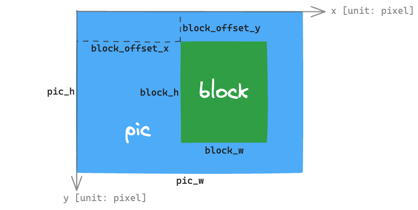

Pixel-Processing Accelerator (PPA)
Introduction
ESP32-P4 includes a pixel-processing accelerator (PPA) module, to realize hardware-level acceleration of image algorithms, such as image rotation, scaling, mirroring, and blending.
Terminology
The terms used in relation to the PPA driver are given in the table and the diagram below.
Term |
Definition |
|---|---|
Picture (pic) |
A complete image stored in the system memory. |
Block |
A portion cropped from a picture at a certain size, with the maximum size equivalent to the entire picture. |
Pixel |
The unit to be used in the PPA context. |
PPA Operation |
Types of image algorithm accelerations, includes scale-rotate-mirror (SRM), blend, and fill. |
PPA Client |
Who wants to do the PPA operations. Typically, every PPA client is hold by a specific task. |
PPA Transaction |
One request from a PPA client to do a PPA operation is one PPA transaction. |

PPA picture/block terminology
Functional Overview
The following sections detail the design of the PPA driver:
Register PPA Client - Covers how to register a PPA client to perform any PPA operations.
Register PPA Event Callbacks - Covers how to hook user specific code to PPA driver event callback function.
Perform PPA Operations - Covers how to perform a PPA operation.
Buffer Alignment - Covers the buffer alignment requirements for PPA input and output buffers.
Thread Safety - Covers the usage of the PPA operation APIs in thread safety aspect.
Performance Overview - Covers the performance of PPA operations.
Register PPA Client
Requests to perform PPA operations are made by PPA clients. Therefore, PPA clients need to be registered first before doing any PPA operations. Call ppa_register_client() function to register a new client. ppa_client_config_t structure is used to specify the properties of the client.
ppa_client_config_t::oper_type- Each PPA operation type corresponds to one PPA client type, a registered PPA client can only request one specific type of PPA operations.ppa_client_config_t::max_pending_trans_num- Decides the maximum number of pending PPA transactions the client can hold.
It is recommended that every task to register its own PPA clients. For example, an application contains two tasks: Task A requires both the PPA SRM and the PPA fill functionalities, so one PPA SRM client and one PPA fill client should be registered in Task A; While Task B also requires the PPA SRM functionality, then another PPA SRM client should be registered in Task B.
If the task no longer needs to do PPA operations, the corresponding PPA clients can be deregistered with ppa_unregister_client() function.
Register PPA Event Callbacks
When an event occurs (e.g., a PPA transaction is completed), the CPU is notified of this event via an interrupt. If some specific functions need to be called when a particular event occurs, a callback can be registered for that event by calling ppa_client_register_event_callbacks(). This can be specifically useful when PPA_TRANS_MODE_NON_BLOCKING mode is selected to perform the PPA operations. It is worth noticing that the event callbacks are bound to PPA clients, but the user context is provided per transaction in the call to the PPA operation APIs. This allows the maximum flexibility in utilizing the event callbacks.
The registered callback functions are called in the interrupt context, therefore, the callback functions should follow common ISR (Interrupt Service Routine) rules.
Perform PPA Operations
Once the PPA client is registered, a PPA operation can be requested with the returned ppa_client_handle_t.
PPA operations includes:
Scale, Rotate, Mirror (SRM)
Call ppa_do_scale_rotate_mirror() to apply one or more of the scaling, rotation, mirroring operations to the target block inside a picture.
Some notes to avoid confusion in configuring ppa_srm_oper_config_t:
ppa_in_pic_blk_config_t::bufferandppa_out_pic_blk_config_t::bufferhave to be the pointers to different picture buffers for a SRM operation.The precision of
ppa_srm_oper_config_t::scale_xandppa_srm_oper_config_t::scale_ywill be truncated to a step size of 1/16.Output block's width/height is totally determined by the input block's width/height, scaling factor, and rotation angle, so output block's width/height does not need to be configured. However, please make sure the output block can fit at the offset location in the output picture.
If the color mode of the input or output picture is
PPA_SRM_COLOR_MODE_YUV420, then itspic_w,pic_h,block_w,block_h,block_offset_x,block_offset_yfields must be even.
Note
The PPA SRM internally uses bilinear scaling algorithm to process. Therefore, it may cause chromatic aberration and loss of contrast at the edges in a scaled picture.
Blend
Call ppa_do_blend() to blend the two target blocks of two so-called foreground (FG) and background (BG) pictures.
Blend follows the normal Alpha Blending formula:
\(A_{out} = A_b + A_f - A_b \times A_f\)
\(C_{out} = (C_b \times A_b \times (1 - A_f) + C_f \times A_f) / (A_b + A_f - A_b \times A_f)\)
where \(A_b\) is the Alpha channel of the background layer, \(A_f\) is the Alpha channel of the foreground layer, \(C_b\) corresponds to the R, G, B components of the background layer, and \(C_f\) corresponds to the R, G, B components of the foreground layer.
Note that this formula is not symmetric to FG and BG. When \(A_f = 1\), it calculates \(C_{out} = C_f\), \(A_{out} = 1\), which means if the color mode of the FG picture is PPA_BLEND_COLOR_MODE_RGB565 or PPA_BLEND_COLOR_MODE_RGB888, since a Alpha value of 255 will be filled by the PPA hardware (i.e. \(A_f = 1\)), the blended result will be identical to the FG block.
If ppa_blend_oper_config_t::bg_ck_en or ppa_blend_oper_config_t::fg_ck_en is set to true, the pixels that fall into the color-key (also known as Chroma-key) range do not follow the Alpha Blending process. Please check ESP32-P4 Technical Reference Manual > Pixel-Processing Accelerator (PPA) > Functional Description > Layer Blending (BLEND) [PDF] for the detailed rules.
Similarly, some notes to avoid confusion in configuring ppa_blend_oper_config_t:
ppa_out_pic_blk_config_t::buffercan be the same pointer to one of the input'sppa_in_pic_blk_config_t::bufferfor a blend operation.The blocks' width/height of FG and BG should be identical, and are the width/height values for the output block.
If the color mode of the input picture is
PPA_BLEND_COLOR_MODE_A4, then itsblock_wandblock_offset_xfields must be even.
Fill
Call ppa_do_fill() to fill a target block inside a picture.
ppa_trans_mode_t is a field configurable to all the PPA operation APIs. It decides whether you want the call to the PPA operation API to block until the transaction finishes or to return immediately after the transaction is pushed to the internal queue.
Buffer Alignment
The PPA requires certain buffer alignment rules to ensure memory access correctness:
Cache line alignment (output buffer only):
The
out.bufferaddress andout.buffer_sizemust be aligned to the cache line size, if the buffer is located in a memory region that is cacheable.
Flash encryption alignment (when flash encryption is enabled and the buffers are located in external memory):
The byte width of the block must be aligned to 16 bytes.
The starting address of each row of the block must be aligned to 16 bytes.
Additionally, when accessing encrypted external memory, the PPA's DMA data burst length must be greater than or equal to 16 bytes. If a smaller burst length is configured, the driver will automatically increase it to meet this requirement.
Warning
SRM engine processes the picture by macro blocks, where the alignment of the macro blocks is uncontrollable, thus if the buffer is in external memory, SRM operation is unable to work with flash encrypted.
Thread Safety
The PPA driver has guaranteed the thread safety of calling the PPA operation APIs in all following situations:
Among clients of different types in one task
Among clients of same type in different tasks
Among clients of different types in different tasks
Performance Overview
The PPA operations are acted on the target block of an input picture. Therefore, the time it takes to complete a PPA transaction is proportional to the amount of the data in the block. The size of the entire picture has no influence on the performance. More importantly, the PPA performance highly relies on the PSRAM bandwidth if the pictures are located in the PSRAM section. When there are quite a few peripherals reading and writing to the PSRAM at the same time, the performance of PPA operation will be greatly reduced.
Application Examples
peripherals/ppa/ppa_rgb_lcd - PPA with RGB LCD display example. The image used in this example will be first scaled up, rotated at counter-clockwise direction and rotated back, mirrored and mirror back, and scaled down. Then the image will be blended with a whole red image with less transparency. Next the ESP32 word will be color-keyed out. Lastly a frame will be filled around the ESP32.
API Reference
Header File
This header file can be included with:
#include "driver/ppa.h"
This header file is a part of the API provided by the
esp_driver_ppacomponent. To declare that your component depends onesp_driver_ppa, add the following to your CMakeLists.txt:REQUIRES esp_driver_ppa
or
PRIV_REQUIRES esp_driver_ppa
Functions
-
esp_err_t ppa_register_client(const ppa_client_config_t *config, ppa_client_handle_t *ret_client)
Register a PPA client to do a specific PPA operation.
- Parameters:
config -- [in] Pointer to a collection of configurations for the client
ret_client -- [out] Returned client handle
- Returns:
ESP_OK: Register the PPA client successfully
ESP_ERR_INVALID_ARG: Register the PPA client failed because of invalid argument
ESP_ERR_NO_MEM: Register the PPA client failed because out of memory
ESP_FAIL: Register the PPA client failed because of other error
-
esp_err_t ppa_unregister_client(ppa_client_handle_t ppa_client)
Unregister a PPA client.
Note
This will also free the resources occupied by the client
- Parameters:
ppa_client -- [in] PPA client handle, allocated by
ppa_register_client- Returns:
ESP_OK: Unregister the PPA client successfully
ESP_ERR_INVALID_ARG: Unregister the PPA client failed because of invalid argument
ESP_ERR_INVALID_STATE: Unregister the PPA client failed because there are unfinished transactions
-
esp_err_t ppa_client_register_event_callbacks(ppa_client_handle_t ppa_client, const ppa_event_callbacks_t *cbs)
Register event callbacks for a PPA client.
Note
Any user private data that wants to be passed directly to callback's user_data is provided per PPA transaction. Please check the
user_datafield inppa_xxx_oper_config_tstructure.- Parameters:
ppa_client -- [in] PPA client handle
cbs -- [in] Structure with all PPA callbacks
- Returns:
ESP_OK: Register event callbacks for the PPA client successfully
ESP_ERR_INVALID_ARG: Register event callbacks for the PPA client failed because of invalid argument
-
esp_err_t ppa_do_scale_rotate_mirror(ppa_client_handle_t ppa_client, const ppa_srm_oper_config_t *config)
Perform a scaling-rotating-mirroring (SRM) operation to a picture.
- Parameters:
ppa_client -- [in] PPA client handle that has been registered to do SRM operations
config -- [in] Pointer to a collection of configurations for the SRM operation transaction, ppa_srm_oper_config_t
- Returns:
ESP_OK: Perform a SRM operation successfully
ESP_ERR_INVALID_ARG: Perform a SRM operation failed because of invalid argument
ESP_FAIL: Perform a SRM operation failed because the client's pending transactions has reached its maximum capacity
-
esp_err_t ppa_do_blend(ppa_client_handle_t ppa_client, const ppa_blend_oper_config_t *config)
Perform a blending operation to a picture.
- Parameters:
ppa_client -- [in] PPA client handle that has been registered to do blend operations
config -- [in] Pointer to a collection of configurations for the blend operation transaction, ppa_blend_oper_config_t
- Returns:
ESP_OK: Perform a blend operation successfully
ESP_ERR_INVALID_ARG: Perform a blend operation failed because of invalid argument
ESP_FAIL: Perform a blend operation failed because the client's pending transactions has reached its maximum capacity
-
esp_err_t ppa_do_fill(ppa_client_handle_t ppa_client, const ppa_fill_oper_config_t *config)
Perform a filling operation to a picture.
- Parameters:
ppa_client -- [in] PPA client handle that has been registered to do fill operations
config -- [in] Pointer to a collection of configurations for the fill operation transaction, ppa_fill_oper_config_t
- Returns:
ESP_OK: Perform a fill operation successfully
ESP_ERR_INVALID_ARG: Perform a fill operation failed because of invalid argument
ESP_FAIL: Perform a fill operation failed because the client's pending transactions has reached its maximum capacity
-
esp_err_t ppa_set_rgb2gray_formula(uint8_t r_weight, uint8_t g_weight, uint8_t b_weight)
Configure the RGB888 to GRAY8 color conversion coefficients for ppa_do_scale_rotate_mirror and ppa_do_fill.
The gray value is calculated as: gray = (r_weight * R + g_weight * G + b_weight * B) >> 8 Note: (r_weight + g_weight + b_weight) should equal to 256.
- Parameters:
r_weight -- Coefficient for R component, range: [0, 255]
g_weight -- Coefficient for G component, range: [0, 255]
b_weight -- Coefficient for B component, range: [0, 255]
- Returns:
ESP_OK: Set the RGB888 to GRAY color conversion formula successfully
ESP_ERR_NOT_SUPPORTED: Set the RGB888 to GRAY color conversion formula failed because the PPA peripheral does not support this feature
ESP_ERR_INVALID_ARG: Set the RGB888 to GRAY color conversion formula failed because of invalid argument
ESP_ERR_INVALID_STATE: Set the RGB888 to GRAY color conversion formula failed because the PPA peripheral not initialized
Structures
-
struct ppa_client_config_t
A collection of configuration items that used for registering a PPA client.
Public Members
-
ppa_operation_t oper_type
The desired PPA operation for the client
-
uint32_t max_pending_trans_num
The maximum number of pending transactions for the client. By default, it will be 1, which is sufficient if all transactions are performed with
PPA_TRANS_MODE_BLOCKING
-
ppa_data_burst_length_t data_burst_length
The desired data burst length for all the transactions of the client. Use a small burst length will decrease PPA performance, but can save burst bandwidth for other peripheral usages. By default, it will be at the maximum burst length,
PPA_DATA_BURST_LENGTH_128
-
uint32_t allow_pd
If set, driver allows the power domain to be powered off when system enters sleep mode. This can save power, but at the expense of more RAM being consumed to save register context. All clients must have the same value for this flag.
-
struct ppa_client_config_t flags
Configuration flags
-
ppa_operation_t oper_type
-
struct ppa_event_data_t
Type of PPA event data.
-
struct ppa_event_callbacks_t
Group of supported PPA callbacks.
Public Members
-
ppa_event_callback_t on_trans_done
Invoked when a PPA transaction finishes
-
ppa_event_callback_t on_trans_done
-
struct ppa_in_pic_blk_config_t
A collection of configuration items for an input picture and the target block inside the picture.
Public Members
-
const void *buffer
Pointer to the input picture buffer
-
uint32_t pic_w
Input picture width (unit: pixel)
-
uint32_t pic_h
Input picture height (unit: pixel)
-
uint32_t block_w
Target block width (unit: pixel)
-
uint32_t block_h
Target block height (unit: pixel)
-
uint32_t block_offset_x
Target block offset in x direction in the picture (unit: pixel)
-
uint32_t block_offset_y
Target block offset in y direction in the picture (unit: pixel)
-
ppa_srm_color_mode_t srm_cm
Color mode of the picture in a PPA SRM operation. Supported color mode in
ppa_srm_color_mode_t
-
ppa_blend_color_mode_t blend_cm
Color mode of the picture in a PPA blend operation. Supported color mode in
ppa_blend_color_mode_t
-
ppa_fill_color_mode_t fill_cm
Color mode of the picture in a PPA fill operation. Supported color mode in
ppa_fill_color_mode_t
-
esp_color_fourcc_t cm
Four Character Code of the color mode
-
ppa_color_range_t yuv_range
When the color mode is any YUV color space, this field is to describe its color range
-
ppa_color_conv_std_rgb_yuv_t yuv_std
When the color mode is any YUV color space, this field is to describe its YUV<->RGB conversion standard
-
const void *buffer
-
struct ppa_out_pic_blk_config_t
A collection of configuration items for an output picture and the target block inside the picture.
Public Members
-
void *buffer
Pointer to the output picture buffer (requires alignment: internal memory needs align to L1 cache line size, external memory needs align to L1 and L2 cache line size)
-
uint32_t buffer_size
Size of the output picture buffer (requires alignment: internal memory needs align to L1 cache line size, external memory needs align to L1 and L2 cache line size)
-
uint32_t pic_w
Output picture width (unit: pixel)
-
uint32_t pic_h
Output picture height (unit: pixel)
-
uint32_t block_offset_x
Target block offset in x direction in the picture (unit: pixel)
-
uint32_t block_offset_y
Target block offset in y direction in the picture (unit: pixel)
-
ppa_srm_color_mode_t srm_cm
Color mode of the picture in a PPA SRM operation. Supported color mode in
ppa_srm_color_mode_t
-
ppa_blend_color_mode_t blend_cm
Color mode of the picture in a PPA blend operation. Supported color mode in
ppa_blend_color_mode_t
-
ppa_fill_color_mode_t fill_cm
Color mode of the picture in a PPA fill operation. Supported color mode in
ppa_fill_color_mode_t
-
esp_color_fourcc_t cm
Four Character Code of the color mode
-
ppa_color_range_t yuv_range
When the color mode is any YUV color space, this field is to describe its color range
-
ppa_color_conv_std_rgb_yuv_t yuv_std
When the color mode is any YUV color space, this field is to describe its YUV<->RGB conversion standard
-
void *buffer
-
struct ppa_srm_oper_config_t
A collection of configuration items to do a PPA SRM operation transaction.
Public Members
-
ppa_in_pic_blk_config_t in
Information of the input picture and the target block
-
ppa_out_pic_blk_config_t out
Information of the output picture and the target block
-
ppa_srm_rotation_angle_t rotation_angle
Rotation (counter-clockwise) to the target block, select from
ppa_srm_rotation_angle_t
-
float scale_x
Scaling factor to the target block in the x direction
-
float scale_y
Scaling factor to the target block in the y direction
-
bool mirror_x
Whether to mirror the target block in the x direction
-
bool mirror_y
Whether to mirror the target block in the y direction
-
bool rgb_swap
Whether to swap the input data in RGB (e.g. ARGB becomes BGRA, RGB becomes BGR)
-
bool byte_swap
Whether to swap the input data in byte. Only available feature if input picture color mode is ARGB8888 or RGB565
-
ppa_alpha_update_mode_t alpha_update_mode
Select whether the alpha channel of the input picture needs update
-
uint32_t alpha_fix_val
Range: [0, 255] When PPA_ALPHA_FIX_VALUE mode is selected, alpha_fix_val is the new alpha value to replace the input alpha value (output_alpha = alpha_fix_val)
-
float alpha_scale_ratio
Range: (0, 1) When PPA_ALPHA_SCALE mode is selected, alpha_scale_ratio is the multiplier to the input alpha value (output_alpha = alpha_scale_ratio * input_alpha) Ratio resolution is 1/256
-
ppa_trans_mode_t mode
Determines whether to block inside the operation functions, see
ppa_trans_mode_t
-
void *user_data
User registered data to be passed into
done_cbcallback function
-
ppa_in_pic_blk_config_t in
-
struct ppa_blend_oper_config_t
A collection of configuration items to do a PPA blend operation transaction.
Public Members
-
ppa_in_pic_blk_config_t in_bg
Information of the input background picture and the target block
-
ppa_in_pic_blk_config_t in_fg
Information of the input foreground picture and the target block
-
ppa_out_pic_blk_config_t out
Information of the output picture and the target block
-
bool bg_rgb_swap
Whether to swap the background input data in RGB (e.g. ARGB becomes BGRA, RGB becomes BGR)
-
bool bg_byte_swap
Whether to swap the background input data in byte. Only available feature if input BG picture color mode is ARGB8888 or RGB565
-
ppa_alpha_update_mode_t bg_alpha_update_mode
Select whether the alpha channel of the input background picture needs update
-
uint32_t bg_alpha_fix_val
Range: [0, 255] When PPA_ALPHA_FIX_VALUE mode is selected, alpha_fix_val is the new alpha value to replace the input alpha value (output_alpha = alpha_fix_val)
-
float bg_alpha_scale_ratio
Range: (0, 1) When PPA_ALPHA_SCALE mode is selected, alpha_scale_ratio is the multiplier to the input alpha value (output_alpha = alpha_scale_ratio * input_alpha) Ratio resolution is 1/256
-
bool fg_rgb_swap
Whether to swap the foreground input data in RGB (e.g. ARGB becomes BGRA, RGB becomes BGR)
-
bool fg_byte_swap
Whether to swap the foreground input data in byte. Only available feature if input FG picture color mode is ARGB8888 or RGB565
-
ppa_alpha_update_mode_t fg_alpha_update_mode
Select whether the alpha channel of the input foreground picture needs update
-
uint32_t fg_alpha_fix_val
Range: [0, 255] When PPA_ALPHA_FIX_VALUE mode is selected, alpha_fix_val is the new alpha value to replace the input alpha value (output_alpha = alpha_fix_val)
-
float fg_alpha_scale_ratio
Range: (0, 1) When PPA_ALPHA_SCALE mode is selected, alpha_scale_ratio is the multiplier to the input alpha value (output_alpha = alpha_scale_ratio * input_alpha) Ratio resolution is 1/256
-
color_pixel_rgb888_data_t fg_fix_rgb_val
When in_fg.blend_cm is PPA_BLEND_COLOR_MODE_A8/4, this field can be used to set a fixed color for the foreground, in RGB888 format
-
bool bg_ck_en
Whether to enable color keying for background If not enabled, all background pixels are considered as out of the color-keying range
-
color_pixel_rgb888_data_t bg_ck_rgb_low_thres
The lower threshold of the color-keying range for the background, in RGB888 format
-
color_pixel_rgb888_data_t bg_ck_rgb_high_thres
The higher threshold of the color-keying range for the background, in RGB888 format
-
bool fg_ck_en
Whether to enable color keying for foreground If not enabled, all foreground pixels are considered as out of the color-keying range
-
color_pixel_rgb888_data_t fg_ck_rgb_low_thres
The lower threshold of the color-keying range for the foreground, in RGB888 format
-
color_pixel_rgb888_data_t fg_ck_rgb_high_thres
The higher threshold of the color-keying range for the foreground, in RGB888 format
-
color_pixel_rgb888_data_t ck_rgb_default_val
The color to overwrite when a pixel, where its background element and foreground element are both within their color-keying ranges, in RGB888 format
-
bool ck_reverse_bg2fg
If this bit is set, in color-keying, for the pixel, where its background element is in the color range, but its foreground element is not in the color range, it will output the foreground element instead of the background element
-
ppa_trans_mode_t mode
Determines whether to block inside the operation functions, see
ppa_trans_mode_t
-
void *user_data
User registered data to be passed into
done_cbcallback function
-
ppa_in_pic_blk_config_t in_bg
-
struct ppa_fill_oper_config_t
A collection of configuration items to do a PPA fill operation transaction.
Public Members
-
ppa_out_pic_blk_config_t out
Information of the output picture and the target block
-
uint32_t fill_block_w
The width of the block to be filled (unit: pixel)
-
uint32_t fill_block_h
The height of the block to be filled (unit: pixel)
-
color_pixel_argb8888_data_t fill_argb_color
For any ARGB/RGB format color to be filled, use this field to fill A (if applicable)/R/G/B components
-
color_pixel_gray8_data_t fill_gray8_color
For GRAY8 format color to be filled
-
color_macroblock_yuv_data_t fill_yuv_color
For any YUV format color to be filled, use this field to fill Y/U/V components
-
uint32_t fill_color_val
The color to be filled, in a raw 32-bit value. The interpretation of the value depends on the selected
fill_cm
-
ppa_trans_mode_t mode
Determines whether to block inside the operation functions, see
ppa_trans_mode_t
-
void *user_data
User registered data to be passed into
done_cbcallback function
-
ppa_out_pic_blk_config_t out
Type Definitions
-
typedef struct ppa_client_t *ppa_client_handle_t
Type of PPA client handle.
-
typedef bool (*ppa_event_callback_t)(ppa_client_handle_t ppa_client, ppa_event_data_t *event_data, void *user_data)
Type of PPA event callback.
- Param ppa_client:
[in] PPA client handle
- Param event_data:
[in] PPA event data
- Param user_data:
[in] User registered data from calling
ppa_do_xxxto perform an operation- Return:
Whether a task switch is needed after the callback function returns, this is usually due to the callback wakes up some high priority task.
Enumerations
-
enum ppa_operation_t
Enumeration of all PPA available operations.
Values:
-
enumerator PPA_OPERATION_SRM
Do scale-rotate-mirror operation
-
enumerator PPA_OPERATION_BLEND
Do blend operation
-
enumerator PPA_OPERATION_FILL
Do fill operation, use one constant pixel to fill a target window
-
enumerator PPA_OPERATION_INVALID
Invalid PPA operations, indicates the quantity of available PPA operations
-
enumerator PPA_OPERATION_SRM
-
enum ppa_trans_mode_t
Modes to perform the PPA operations.
Values:
-
enumerator PPA_TRANS_MODE_BLOCKING
ppa_do_xxxfunction will block until the PPA operation is finished
-
enumerator PPA_TRANS_MODE_NON_BLOCKING
ppa_do_xxxfunction will return immediately after the PPA operation is pushed to the internal queue
-
enumerator PPA_TRANS_MODE_BLOCKING
Header File
This header file can be included with:
#include "hal/ppa_types.h"
This header file is a part of the API provided by the
esp_hal_ppacomponent. To declare that your component depends onesp_hal_ppa, add the following to your CMakeLists.txt:REQUIRES esp_hal_ppa
or
PRIV_REQUIRES esp_hal_ppa
Enumerations
-
enum ppa_engine_type_t
Enumeration of engines in PPA modules.
Values:
-
enumerator PPA_ENGINE_TYPE_SRM
PPA Scaling-Rotating-Mirroring (SRM) engine, used to perform scale, rotate, mirror
-
enumerator PPA_ENGINE_TYPE_BLEND
PPA Blending engine, used to perform blend or fill
-
enumerator PPA_ENGINE_TYPE_SRM
-
enum ppa_srm_rotation_angle_t
Enumeration of PPA Scaling-Rotating-Mirroring available rotation angle (in the counterclockwise direction)
Values:
-
enumerator PPA_SRM_ROTATION_ANGLE_0
Picture does no rotation
-
enumerator PPA_SRM_ROTATION_ANGLE_90
Picture rotates 90 degrees CCW
-
enumerator PPA_SRM_ROTATION_ANGLE_180
Picture rotates 180 degrees CCW
-
enumerator PPA_SRM_ROTATION_ANGLE_270
Picture rotates 270 degrees CCW
-
enumerator PPA_SRM_ROTATION_ANGLE_0
-
enum ppa_srm_color_mode_t
Enumeration of PPA Scaling-Rotating-Mirroring available color mode.
Values:
-
enumerator PPA_SRM_COLOR_MODE_ARGB8888
PPA SRM color mode: ARGB8888
-
enumerator PPA_SRM_COLOR_MODE_RGB888
PPA SRM color mode: RGB888
-
enumerator PPA_SRM_COLOR_MODE_RGB565
PPA SRM color mode: RGB565
-
enumerator PPA_SRM_COLOR_MODE_YUV420
PPA SRM color mode: YUV420
-
enumerator PPA_SRM_COLOR_MODE_YUV444
PPA SRM color mode: YUV444 (limited range only and can only be the input color mode)
-
enumerator PPA_SRM_COLOR_MODE_YUV422_UYVY
PPA SRM color mode: YUV422
-
enumerator PPA_SRM_COLOR_MODE_YUV422_VYUY
PPA SRM color mode: YUV422, only available on input
-
enumerator PPA_SRM_COLOR_MODE_YUV422_YUYV
PPA SRM color mode: YUV422, only available on input
-
enumerator PPA_SRM_COLOR_MODE_YUV422_YVYU
PPA SRM color mode: YUV422, only available on input
-
enumerator PPA_SRM_COLOR_MODE_GRAY8
PPA SRM color mode: GRAY8
-
enumerator PPA_SRM_COLOR_MODE_ARGB8888
-
enum ppa_blend_color_mode_t
Enumeration of PPA blend available color mode.
Values:
-
enumerator PPA_BLEND_COLOR_MODE_ARGB8888
PPA blend color mode: ARGB8888
-
enumerator PPA_BLEND_COLOR_MODE_RGB888
PPA blend color mode: RGB888
-
enumerator PPA_BLEND_COLOR_MODE_RGB565
PPA blend color mode: RGB565
-
enumerator PPA_BLEND_COLOR_MODE_A8
PPA blend color mode: A8, only available on blend foreground input
-
enumerator PPA_BLEND_COLOR_MODE_A4
PPA blend color mode: A4, only available on blend foreground input
-
enumerator PPA_BLEND_COLOR_MODE_YUV420
PPA blend color mode: YUV420, only available on blend background input or on output
-
enumerator PPA_BLEND_COLOR_MODE_YUV422_UYVY
PPA blend color mode: YUV422, only available on blend background input or on output
-
enumerator PPA_BLEND_COLOR_MODE_YUV422_VYUY
PPA blend color mode: YUV422, only available on blend background input
-
enumerator PPA_BLEND_COLOR_MODE_YUV422_YUYV
PPA blend color mode: YUV422, only available on blend background input
-
enumerator PPA_BLEND_COLOR_MODE_YUV422_YVYU
PPA blend color mode: YUV422, only available on blend background input
-
enumerator PPA_BLEND_COLOR_MODE_GRAY8
PPA blend color mode: GRAY8, only available on blend background input or on output
-
enumerator PPA_BLEND_COLOR_MODE_ARGB8888
-
enum ppa_fill_color_mode_t
Enumeration of PPA fill available color mode.
Values:
-
enumerator PPA_FILL_COLOR_MODE_ARGB8888
PPA fill color mode: ARGB8888
-
enumerator PPA_FILL_COLOR_MODE_RGB888
PPA fill color mode: RGB888
-
enumerator PPA_FILL_COLOR_MODE_RGB565
PPA fill color mode: RGB565
-
enumerator PPA_FILL_COLOR_MODE_YUV422_UYVY
PPA fill color mode: YUV422 (w/ UYVY pack order)
-
enumerator PPA_FILL_COLOR_MODE_GRAY8
PPA fill color mode: GRAY8
-
enumerator PPA_FILL_COLOR_MODE_ARGB8888
-
enum ppa_alpha_update_mode_t
Enumeration of PPA alpha compositing update mode.
Values:
-
enumerator PPA_ALPHA_NO_CHANGE
Do not replace alpha value (A' = A). If input format does not contain alpha info, alpha value 255 will be used.
-
enumerator PPA_ALPHA_FIX_VALUE
Replace the alpha value in received pixel with a new, fixed alpha value (A' = val)
-
enumerator PPA_ALPHA_SCALE
Scale the alpha value in received pixel to be a new alpha value (A' = (A * val) >> 8). If input format does not contain alpha info, A' = (255 * val) >> 8.
-
enumerator PPA_ALPHA_INVERT
Invert the alpha value in received pixel (A' = 255 - A). If input format does not contain alpha info, A' = 0, i.e. a layer with 0% opacity.
-
enumerator PPA_ALPHA_NO_CHANGE
-
enum ppa_color_conv_std_rgb_yuv_t
Enumeration of PPA supported color conversion standard between RGB and YUV (determines the YUV<->RGB conversion equation)
Values:
-
enumerator PPA_COLOR_CONV_STD_RGB_YUV_BT601
YUV<->RGB conversion standard: BT.601
-
enumerator PPA_COLOR_CONV_STD_RGB_YUV_BT709
YUV<->RGB conversion standard: BT.709
-
enumerator PPA_COLOR_CONV_STD_RGB_YUV_BT601
-
enum ppa_color_range_t
Enumeration of PPA supported color range (determines the YUV<->RGB conversion equation)
Values:
-
enumerator PPA_COLOR_RANGE_LIMIT
Limited color range, 16 is the darkest black and 235 is the brightest white
-
enumerator PPA_COLOR_RANGE_FULL
Full color range, 0 is the darkest black and 255 is the brightest white
-
enumerator PPA_COLOR_RANGE_LIMIT
-
enum ppa_data_burst_length_t
Enumeration of PPA supported data burst length.
Values:
-
enumerator PPA_DATA_BURST_LENGTH_8
Data burst length: 8 bytes
-
enumerator PPA_DATA_BURST_LENGTH_16
Data burst length: 16 bytes
-
enumerator PPA_DATA_BURST_LENGTH_32
Data burst length: 32 bytes
-
enumerator PPA_DATA_BURST_LENGTH_64
Data burst length: 64 bytes
-
enumerator PPA_DATA_BURST_LENGTH_128
Data burst length: 128 bytes
-
enumerator PPA_DATA_BURST_LENGTH_8